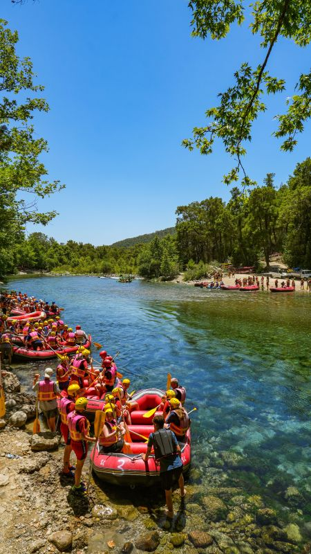

Flow Whitewater Rafting was founded in 2015 by a group of passionate river guides who wanted to share their deep love for the outdoors. What started as a small, local operation with just two inflatable rafts and a vintage van has steadily grown into the region's premier rafting experience. Our founders spent years navigating the toughest rapids, mapping every twist and turn to ensure the safest routes.

Today, we are proud to host thousands of adventurers each season, offering everything from family-friendly half-day trips to expert-level excursions. Despite our exciting growth, our core values remain unchanged: providing personalized, safe, and thrilling trips for everyone. With a dedicated team of certified guides and top-of-the-line equipment, we continue to write our history on the water, one rapid at a time.